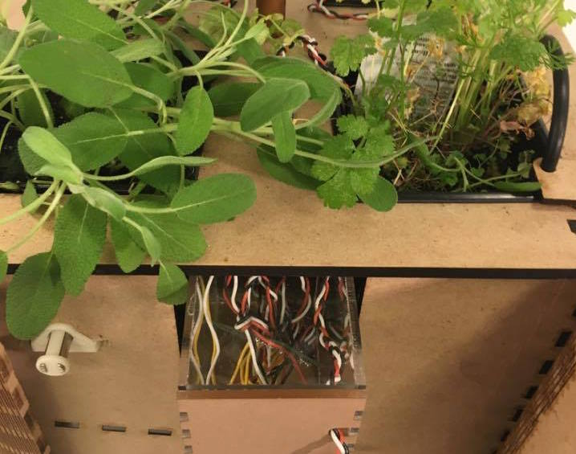

Process
Process
MVP
- Autonomous watering and feedback control
- Autonomous lighting and feedback control
- Water drainage
- Waterproofing and electronics protection
Stretch Goal
- Aesthetically pleasing mechanical design
- Realistic values for light calibration
How We Got Here
Sprint One
 Goal: One potten plant housed in a sketch model with sensors.
Goal: One potten plant housed in a sketch model with sensors. We focused on irrigation control (with gravity, no pump) and sensing for just one plant. We wanted to get small system working with everything from the mechanical irrigation to the Python GUI. We wanted to get a first sketch model built with MDF to test that material and the viability of press fitting finger joint linkages.
Sprint Two
 Goal: Integrated system responding to sensor data to control light and watering, as well as a more refined version of the GUI and website.
Goal: Integrated system responding to sensor data to control light and watering, as well as a more refined version of the GUI and website. We wanted to get closer to completing the control loop between different parts of the system we had built in Sprint 1 by having our sensor input control the lights and pump. We also wanted to refine and prototype closer to our final mechanical structure design.
Sprint Three
 Goal: Calibrate each system and begin constructing the final form with a focus on a "wow" factor.
Goal: Calibrate each system and begin constructing the final form with a focus on a "wow" factor. We focused on having the pump and light control working at the same time, which meant using the Wire library. We also refined our control by making it based on real calibration using DLI. We constructed the final version of our box and worked on making waterproof electronics and drainage containers so that we would only need to test and debug during our last week.
Final Week
 Goal: Race to the finish.We focused on putting everything together and testing so that it would work for a long time and keep all your plants alive! We also added shades to the project and made it more aesthetically pleasing, two of our stretch goals.